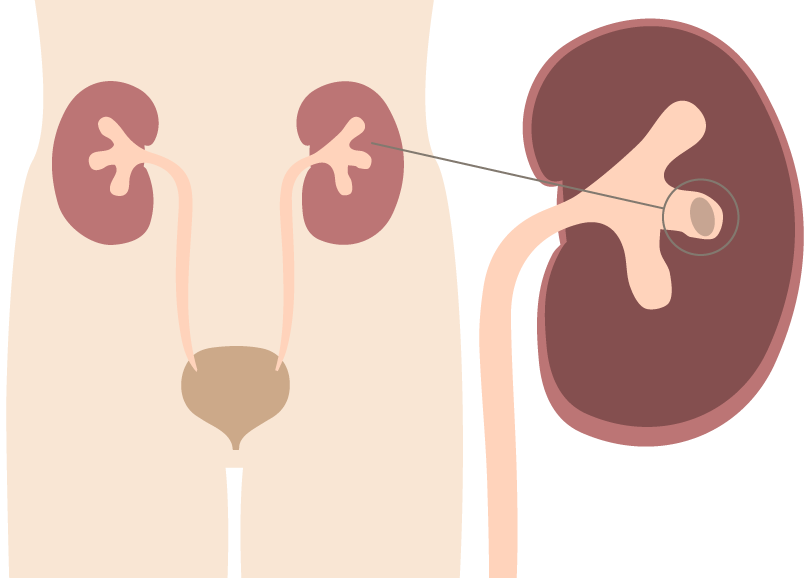

<!--
  Generated template for the WhatMainFunctionKidneyPage page.

  See http://ionicframework.com/docs/components/#navigation for more info on
  Ionic pages and navigation.
-->
<ion-header class = "visual-header">

  <ion-navbar>
    <ion-buttons start>
      <button ion-button icon-only (click) = "openInformation()">
        
      </button>
    </ion-buttons>
    <ion-buttons end>
      <button ion-button icon-only (click) = "dismiss()">
        <ion-icon name = "close-circle" class = "close-icon"></ion-icon>
      </button>
    </ion-buttons>
    <ion-title>{{ 'WHAT_MAIN_FUNCTION_KIDNEY.TITLE' | translate }}</ion-title>
  </ion-navbar>

</ion-header>


<ion-content padding>
  <ion-grid>
    <ion-row>
      <ion-col>
        <label class = "second-title">{{ 'WHAT_MAIN_FUNCTION_KIDNEY.LABEL1' | translate }}</label>
        
        <ul>
          <li>{{ 'WHAT_MAIN_FUNCTION_KIDNEY.LABEL2' | translate }}</li>
          <li>{{ 'WHAT_MAIN_FUNCTION_KIDNEY.LABEL3' | translate }}</li>
          <li>{{ 'WHAT_MAIN_FUNCTION_KIDNEY.LABEL4' | translate }}</li>
          <li>{{ 'WHAT_MAIN_FUNCTION_KIDNEY.LABEL5' | translate }}</li>
        </ul>
      </ion-col>
    </ion-row>
  </ion-grid>


</ion-content>
